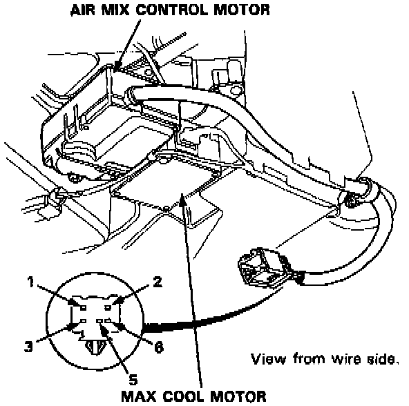

Component Test

1. Connect battery power to the No. 1 terminal of the air mix control motor, and connect ground to the No. 2 terminal; the air mix control motor should run, and stop at COOL.
If it doesn't, reverse the connections; the air mix control motor should run, and stop at HOT.
NOTE: If the air mix control motor does not run, remove it, and check the air mix control linkage and doors for smooth movement. If the air mix control linkage and doors move smoothly, replace the air mix control motor.
2. Measure resistance between the No. 3 terminal and No. 5 terminal, it should be approx. 6 K Ohms.
3. Measure resistance between the No. 5 terminal and No. 6 terminal, it should be approx. 1.2 K Ohms at HOT and approx. 4.8 K Ohms at COOL.